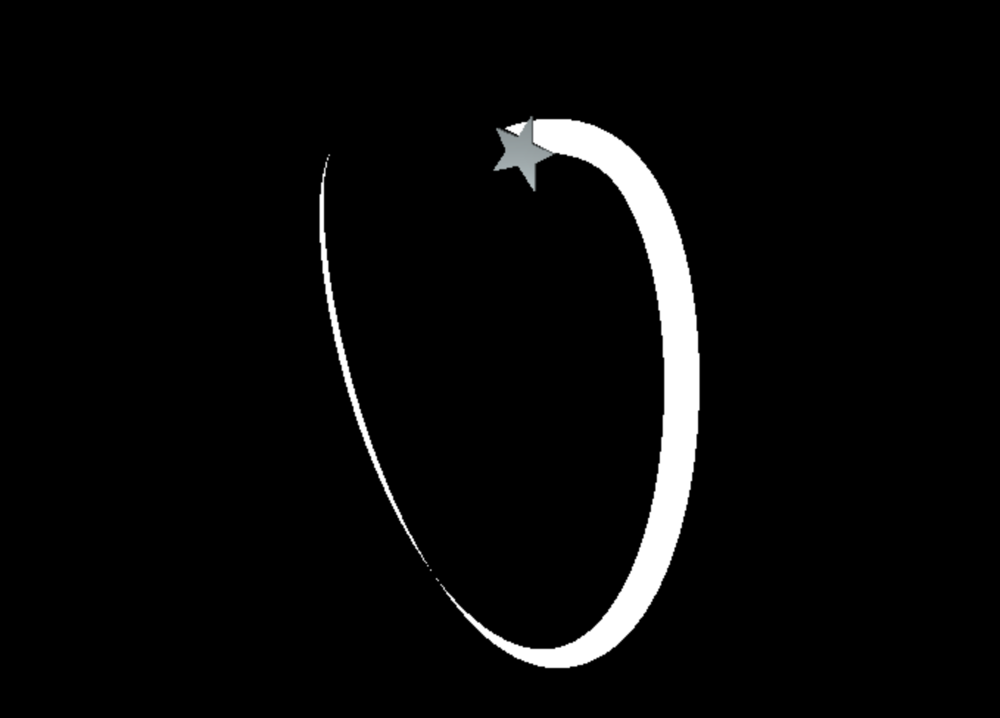

Dimensions
Part 2. Augmented reality
The idea of including augmented reality into the art piece was wholly inspired by AR.js, an awesome project that brings fast and easy augmented reality to the web.
The AR.js demo looked really cool and smooth. I didn’t end up using that library though.
With augmented reality, the art piece became an art experience. The planned user flow for the experience went like this:
- User sees the piece and notices the QR code.
- User whips out phone to scan the QR code.
- Phone is directed to the app.
- App opens the phone’s camera to track the piece in 3D space.
- App superimposes virtual art on the physical art, augmenting reality. ✨
Implementing object tracking (step 4) proved to be difficult. AR.js and others required special markers in order to track the 3D scene.
The prints were already finalized, so I couldn’t add AR markers on it by then. Plus, the piece already had a QR code slapped on it. Adding any more tags would’ve ruined it.
I looked around for alternatives like Tracking.js, OpenCV, and even TensorFlow, but ultimately implemented my own image recognition algorithm.
Recognizing the piece
For this project, I applied a simple image recognition algorithm to determine when the piece has been aligned in front of the camera. Image recognition is a computer vision problem of determining whether an image contains some specific object or not.
The app recognizes when the target piece has been aligned.
There exists many solutions to this problem, ranging from simple histogram matching to convolutional neural networks. These days everyone just uses neural networks and deep learning if possible.
These technologies power some apps like face filters, but are also used for things like mass camera surveillance.
In my case however, I’ve simplified the problem to determining whether any of the three specific art pieces is in the center frame in the user’s camera, or not. No position tracking.
This reduced the problem to a yes/no problem.
Consequently, the algorithm was relatively simple. It’s just a color normalization step and a straightforward “feature matching” of the target images.
I wrote about the algorithm in greater detail in another post!
Once it gets a match the augmented reality experience starts rolling in.
Augmenting reality
The vision for the augmented reality part was that the tiles in the piece would come alive, burst out of the piece, and start drawing lines in the air.

It was basically going to be a particle system.
This was rendered using three.js. I’ve used three.js before and it was great, with easy-to-learn APIs and good examples.
I was quickly able to sketch out virtual objects in space as a prototype.
This was made by overlaying a transparent three.js <canvas> onto the <video> that’s streaming the camera feed.
A three.js extension called DeviceOrientationControls provides synchronization between the device’s orientation and the virtual camera.
One caveat though is that only the orientation can be tracked. Tracking displacement across space wasn’t possible yet, so virtual objects would appear to follow the device when it moves.
The experience was designed around this limitation by keeping the objects at constant distance to the user, subtly hinting that there’s no need to move or walk, only looking around.
There was a bug on iOS Safari with orientation tracking, which apparently was just introduced July 2019, one month before the event. Sadly some iPhone users did not get the full experience.
Modeling the tiles as 3D objects were simply extrusions of the tiles’ 2D shape paths, made very easy using three.js’s ExtrudeGeometry.
The “paint” trails were made using an old unmaintained library called TrailRendererJS, which surprisingly still works, although it bugs out when the virtual camera isn’t at the origin.

The floating tiles’ movement behavior were guided by a smooth triangle wave function:
 y = arccos(0.95 sin(x))
y = arccos(0.95 sin(x))
This triangle wave path was wrapped around a virtual cylinder around the user’s position.
With each floating tile following a variant of this path, the result was an organized chaos of criss-crossing particles orbiting the user.
One interesting experiment was when the trails were allowed to go on indefinitely. The trails would eventually paint the whole scene, producing a nice pattern.
Trail art
When it finally exhibited, I mostly watched from the sidelines, taking notes on how people interacted. It’s like live testing on prod.
There were some UX issues that had to be fixed. It wasn’t as seamless as I’ve hoped, and explicit instructions on how to use it were needed.
It went smoothly for the most part, after a few hotfixes. Seeing people react to it was great! ⭐️
The iOS bug was never fixed. ü§ñ
You can give it a try right on this page!
Simply open this page on a desktop, and then point your phone camera to the following image, assuming your camera app has a QR code scanning feature.
 Go to kalabasa.github.io/dimensions/ on phone if QR doesn’t work.
Go to kalabasa.github.io/dimensions/ on phone if QR doesn’t work.
It has been a really fun and challenging project! ⭐